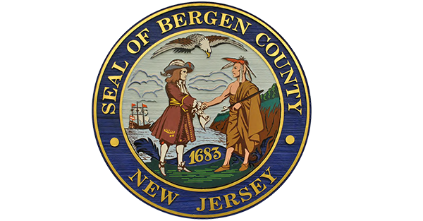
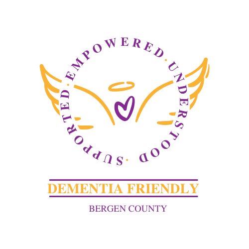

COMMUNITY PARTNERS
Proudly Working Together
These organizations share our mission to bring early cognitive screening and support to communities.

AppChurch Global Foundation

Borough of Palisades Park

Bergen County Division of Senior Services

Bergen County Dementia Friendly Initiative

Calidi Biotherapeutics (NYSE: CLDI)

First Presbyterian Church

NoahTech

Happiness by Habit
AppChurch Global Foundation
Borough of Palisades Park
Bergen County Division of Senior Services
Bergen County Dementia Friendly Initiative
Calidi Biotherapeutics (NYSE: CLDI)
First Presbyterian Church
NoahTech
Happiness by Habit